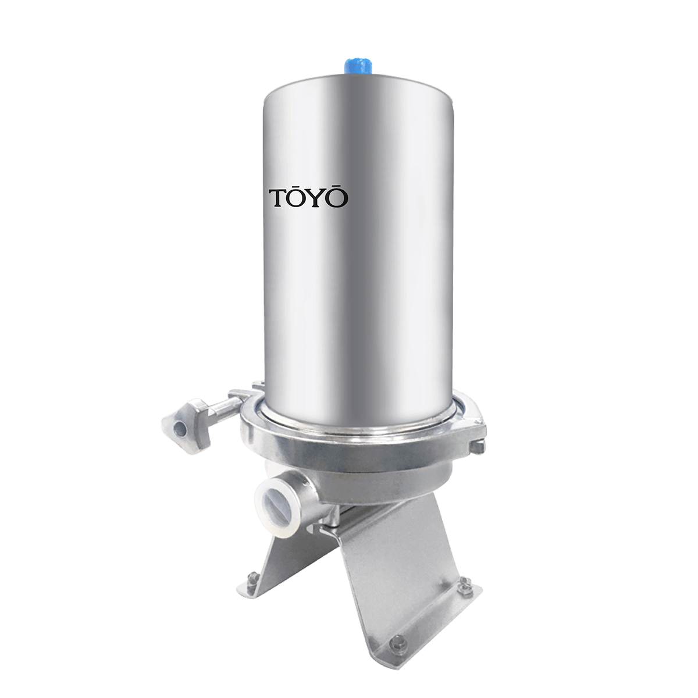
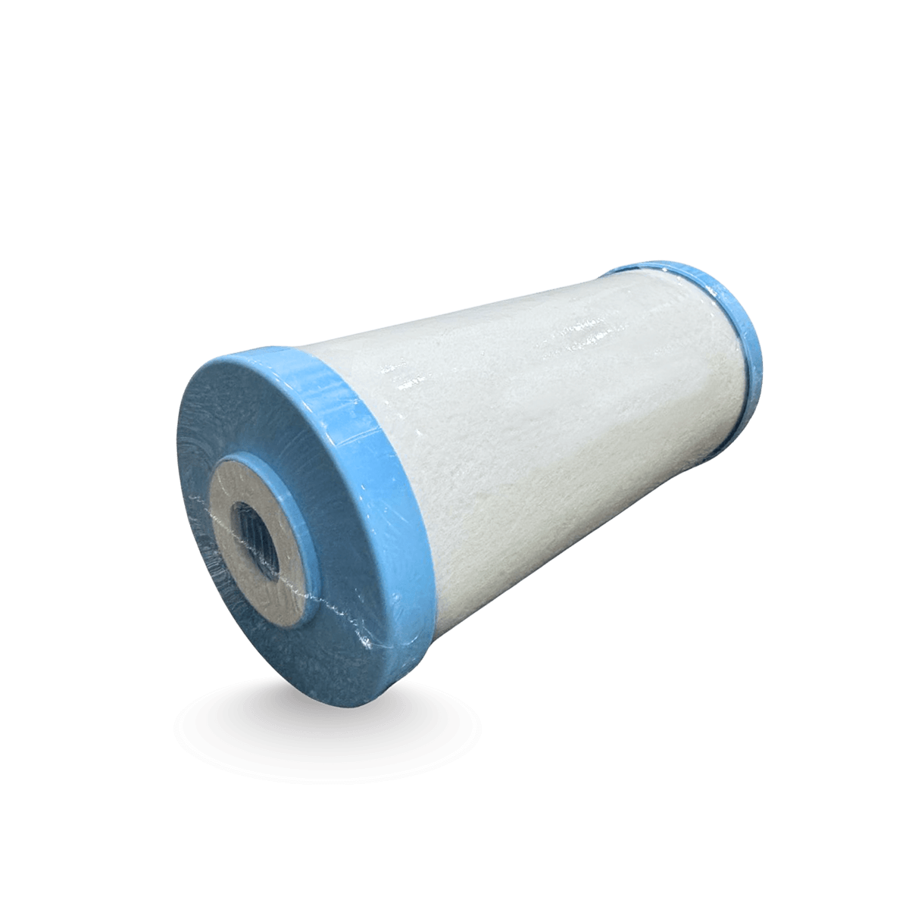

不鏽鋼全戶式除氯系統 200噸 TYS-200
商品描述
台灣製SUS304不鏽鋼機體｜耐壓・抗UV・耐候性全面提升
耐腐蝕、耐陽光、耐水壓，不易老化，為全戶淨水帶來更長久、更穩定、更可靠的保護。
全屋管線全面淨化｜洗澡・料理・洗衣・盥洗用水
降低自來水中餘氯與刺激物質、過敏原、致癌物質...等，減少對肌膚與頭髮的負擔，敏感肌也能更安心。
濾除水中常見污染源｜日本製濾心・過濾水量大
有效攔截泥沙、鐵銹、雜質、餘氯、異味與常見化學物質，減少產生三鹵甲烷，降低家中用水中的過敏原、致癌物，提供更純淨的生活用水，讓家人的健康再多一層保障。
免用電、免排水，可安裝於各種不同類型建築。
【注意事項】
此商品適用一般自來水。
安裝費用另計。
可客製化規劃其他水質設備。
【保養及維護】
請務必依照濾心使用壽命時間，定期更換，確保您的飲用水品質。若未使用且靜置多日，使用前請先排放水3-5分鐘，有任何問題可詢問客服中心 0800-090-881。
商品內容
鹼性離子水生成器主機、日本原裝本體濾心、中文商品說明書、日文商品說明書、液晶顯示中日文對照表、電解用添加食品級鈣粉、酸性水龍頭、pH檢測液、酸鹼性水分歧栓、一年保證書。
商品規格
| 本體材質 | SUS304不鏽鋼 |
| 濾心材質 | 日本GE-Techno活性碳纖維、高密度日本エルベス食品級不織布 |
| 過濾孔徑 | 20微米 |
| 過濾效能 | 約6個月※依照各地水質、使用方式，壽命也會改變 |
| 外殼尺寸 | 直徑(含底板)25cm x 43cm(h) |
| 進水入/出口 | 1“ PT-F |
| 耐壓 | 7kg/cm²~10kg/cm² (100psi~150psi) |
| 處理噸數 | 200噸 ※依照各地水質、使用方式，壽命也會改變 |
| 安裝方式 | 壁掛、立架兩用設計。 |
| 濾料產地 | 日本製 |
| 產地 | 台灣 |
週邊配件/耗材

日本製-200噸濾心

壓力錶